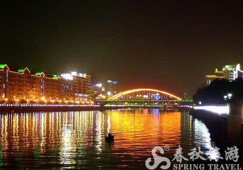
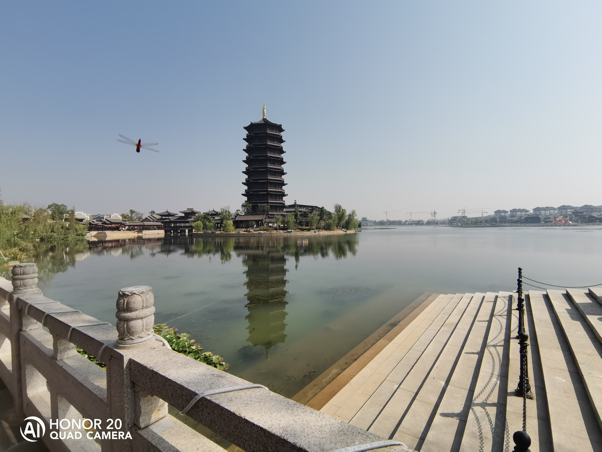
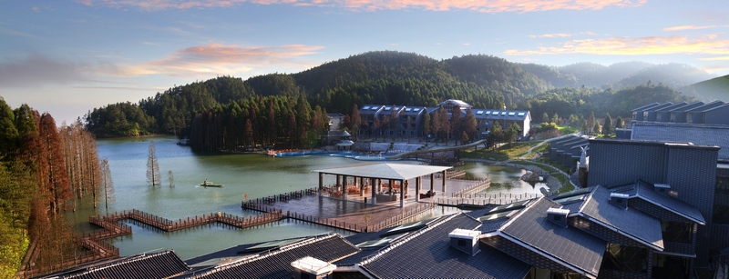
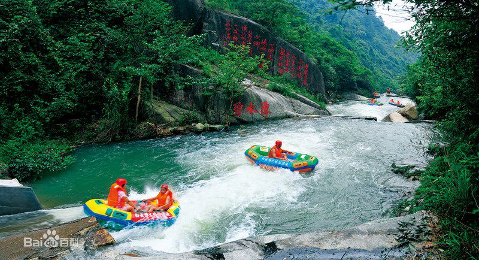

Then,let's talk and see something concrete.
宜春（江西省下辖设区的市）
宜春，江西省下辖市（地级），长江中游城市群重要成员，位于江西省西北部，地处东经113°54′—116°27′，北纬27°33′—29°06′之间。东境与南昌市接界，东南与抚州市为邻，南陲与吉安市及新余市毗连，西南与萍乡市接壤，北与九江市相邻，西北与湖南省长沙市、岳阳市交界。 [1]
截至2017年底，宜春总面积18680.42平方千米；下辖1个区、6个县、代管3个县级市；常住人口555.37万人，户籍人口602.10万人。2017年，宜春实现地区生产总值2021.85亿元。宜春境内以丘陵、山地为主，气候温和，雨量充沛，四季分明。宜春有京九铁路、沪昆高铁、浙赣铁路交汇；赣粤、沪昆、大广等高速公路和320、105国道纵横交错，此外，还拥有宜春明月山机场。 [2]
汉高祖六年（公元前201年），堂邑候陈婴奉命来g此筑城立治，因“城侧有泉，莹媚如春，饮之宜人”，故名宜春。唐初四杰王勃《滕王阁序》中的名句—“物华天宝，人杰地灵”，其人、其事、其物均典出宜春；唐代韩愈写下了“莫以宜春远，江山多胜游”的诗句；宋代理学家朱熹发出了“我行宜春野，四顾多奇山”的感叹。明代《天工开物》作者宋应星、现代物理学家吴有训、两届奥运会冠军杨文军都是宜春的代表。 宜春举办过2004年中华人民共和国第五届农民运动会、2009央视中秋晚会以及每年一度月亮文化节，享有“月亮之都”、“亚洲锂都”之称，先后获中国宜居城市、中国优秀旅游城市、全国绿化模范城市、国家森林城市等称号。



